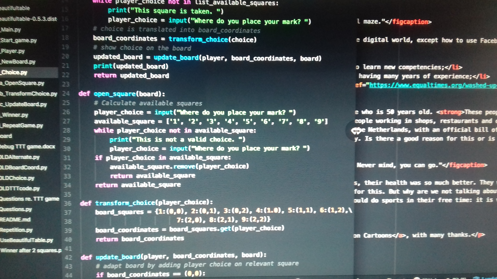

If you succeed in reading all of this without being bored stiff, you qualify as reader of my blog.
Coding @60
Is there life after 50?
You'll be wondering what this has to do with coding. Well, it sketches the environment in which 'people of a certain age' choose to go for something entirely new as a career. Although I would never call it a career change during my first year of coding. I called coding a 'hobby', out of fear that people would laugh at me. So that is what this has to do with coding: it is all about the barrier to learning how to code - it's the idea that it would be seen as ridiculous for people my age to learn how to code.
It seems career changes are only happening among young people. In the Netherlands, where I was born, most people who lose their job at the age of 45 or over will have difficulty finding a job. While the government expects people to continue working until they are almost 68, businesses are not really interested in people over 45. There are some huge prejudices against employees over 45:
- they call in sick more often;
- when sick, they are sick for longer periods of time;
- there is even a risk of them not returning to work at all due to some old people's illness/ailment/disorder/handicap/whatever....;
- they are slower in executing their tasks;
- they resist change and new developments;
- they are slow to pick up anything that has to do with the digital world, except how to use Facebook (to spy on their children!)
- their education and knowledge are outdated;
- they cannot keep up with the younger employees;
- they do not want to participate in training or courses to learn new competencies;
- they are expensive and expect higher salaries because of having many years of experience;
- ..... need we go on? Have a look at this article: Washed-up at 50 in the Netherlands

No wonder an employer will think twice before hiring someone who is 50 years old. These people are a threat, that's obvious, even from looking at the way they are portrayed in the media.
In the United States, the situation is much the same as in the Netherlands, with an official bill of rights for workers over 50. Think about it: we need a law to protect the right of people over 50 to fair treatment in the workplace. This regards things such as the employer making training available, not indicating a preferred age in vacancy announcements, offering the same benefits to all employees whatever their age, etc. The law only applies to people who are 50 years old or older. When you're 37 years old, such a law obviously is not necessary. Is there a good reason for this or is this law a necessity due to the prejudices? Age discrimination appears to be a reality in the US, according to this article: Rights over 50 years old. For further reading see this infopage.

Let me think back to working with younger colleagues. Ah yes, their health was so much better. They were so healthy that they went skiing and came back with a broken leg that took them away from work for two months. They were also of an age that relationships and having kids became more important. So that entailed maternity leave, parental leave, working from home because a child was sick, unexpected absence because of school disasters (the child had been fighting), and so on. Good that they were so young and had all the energy that is needed for this. But why are we not talking about the risks that come with hiring young employees: the risk of these employees being sick or incapacitated over a longer period of time due to sports accidents, or being on leave for months and months due to the birth of a child. The risk of these employees not being interested in training because they want to be home by 6 'o clock. Nothing wrong with spending time with your children, good parenting is extremely important. And of course people should do sports in their free time: it is very good for their health. But there are risks involved, certainly in a time where 'extreme sports' are the thing to go for (if only for your social media image!). And all of this has consequences for an employer and we never hear about these risks.
Oh well, I am just a grumpy old fart, that's obvious.